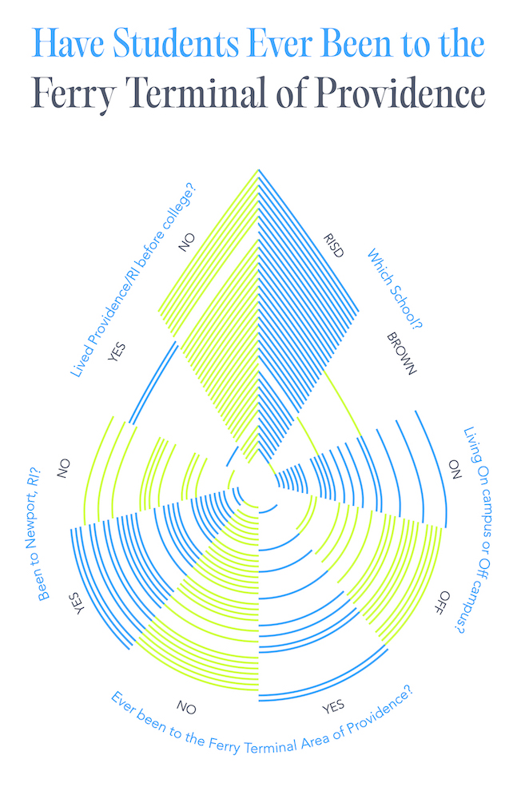
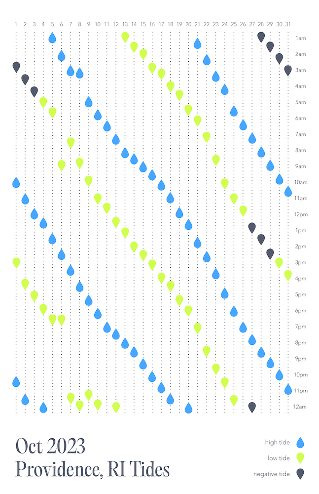
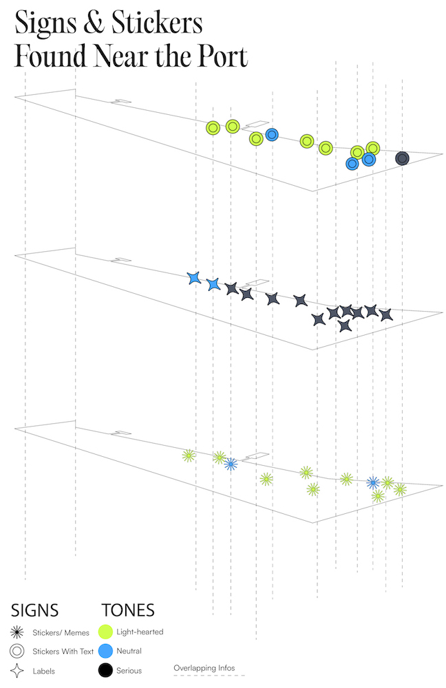
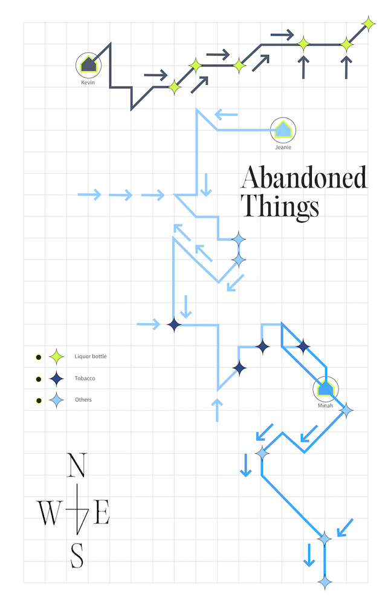
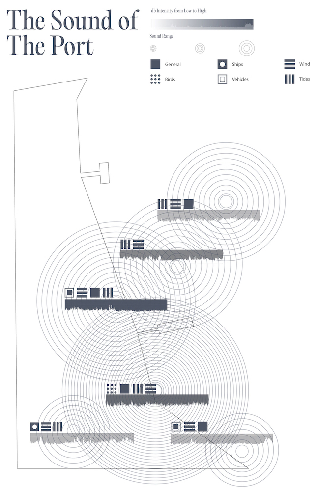

Collaborative Posters series for Mapping and Visualization Project. These posters each contain data collected from the Seasonal Ferry Terminal of Providence.
The posters’ themes:
1. Student Survey
2. Tide
3. Signs & Stickers
4. Abandoned Things
5. Sound




